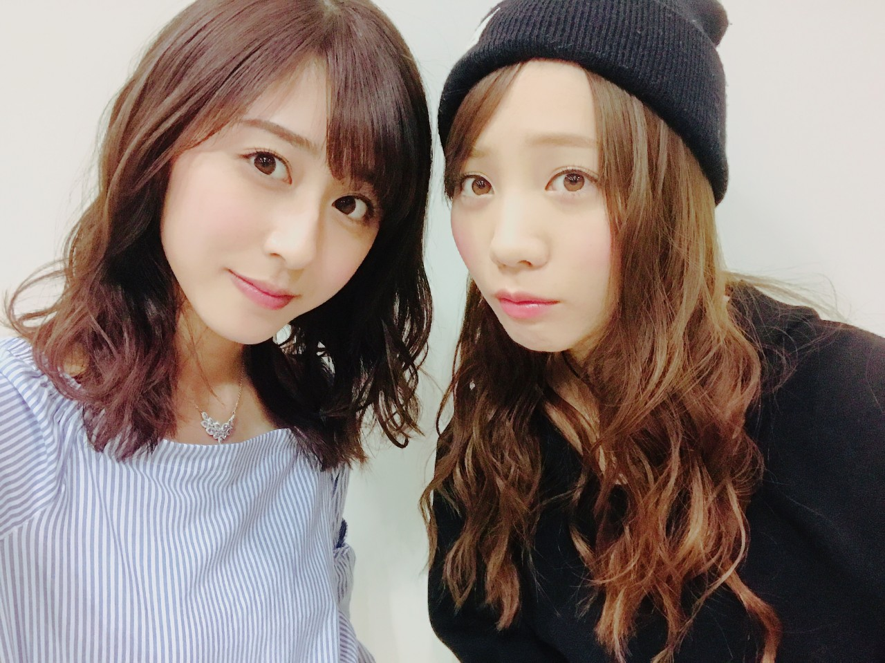

| 2017/04 28 Fri | 観劇 |
ちはるーむへようこそ
今日のちはるーむでは明日何の服を着ようか作戦会議をしました。
今日は象の日。
1729年のこの日に、ベトナムからの献上品として清の商人により初めて渡来してきました。
当時の中御門天皇の前で披露され、
その約一ヶ月後には将軍徳川吉宗の前でも披露されたそうです。
象のルーツ凄い。
日本の動物園の人気者は
元来ベトナムからの献上品だったとは
驚きです
今日は愛未が出演している舞台、
堀内夜明けの会「堀内健演劇講演会 未来のファンタジー」を観劇してきました。
ホリケンさんワールド全開で、
見ていて飽きませんでした！！
面白くてずっと口角が上がりっぱなし...
声に出して笑ってしまう部分も沢山あって
笑いの絶えない舞台でした。
演じている皆さんの雰囲気が
楽しそうで仲が良さそうなのが
伝わってきました
素敵なチームなんだろうなあ☺︎
皆さんも是非見てください！！
ホリケンさんワールドに惹きこまれますから！！
今日観に行ったのは
かりん、花奈、真夏、まあや、真洋。

終演後にホリケンさんと出川さんと
愛未も含めみんなで写真を撮っていただきました！
ホリケンさんも出川さんも
本当いい方々だった...
愛未ちゃんはみんなのアイドルだよ！
と教えてくださいました笑
良かったね、愛されてるね〜愛未(﹡ˆ ˆ﹡)
2月のバースデーライブから
ずっと休みのない愛未。
今日も可愛かったし面白かったし
さすが女優だったよ！
あと一踏ん張り頑張れヽ(；；)丿

残りの公演も素敵なものになりますように◎
------------------------------------------------♡
♬ ChihaMusic
「真赤」My Hair is Badさん
好きな人に尽くしたいっていう
切ない真っ直ぐな気持ちと
切ない気持ちの交錯が
この曲に惹き込まれる。
"0.1秒で飽きる毎日が
突然輝き出したんだ"
って歌詞が素敵。
突然見える世界が変わるほど
ってどれだけ愛が深いんだろう
奥深い。
今日発売の月刊エンタメの
スペシャルブック
見開きで載っていました！
以前撮影したけど
雑誌には載っていなかった写真達が
掲載されていました
なんと、アンケートで評価が高かったメンバーがスペシャルブックに載ったそうなのです。
優しい皆さんがアンケートに
沢山書いてくださったのかな(ToT)
本当嬉しいです(ToT)
ありがとうございます(ToT)
チェックしてみてください...！
おやすみ
斎藤ちはる
コメント(243)
2017/04/28 23:00